网赚 8 月七夕活动
视觉设计与切片输出
从阶段性提收需求出发，为既有活动模板设计可复用的七夕主题皮肤。方案以粉紫渐变、星河流光和鹊桥意象建立浪漫氛围，以古风人物和奖励卡片形成核心视觉锚点，并统一首页、排行榜、分享页、弹窗及奖励状态；最终按开发目录完成背景、标题、按钮、卡片、图标、弹窗和色值标注输出，让设计从视觉展示顺利进入工程落地。
Selected work / Internship journal
第九周完成网赚 8 月七夕活动的视觉设计与切片输出。围绕“星河相会·鹊桥赴夕”建立粉紫星河、鹊桥与古风人物的浪漫主题，在沿用成熟活动框架的基础上完成首页、榜单、弹窗和奖励状态换肤，并将视觉方案进一步拆解为可供开发落地的完整切片与标注资产。
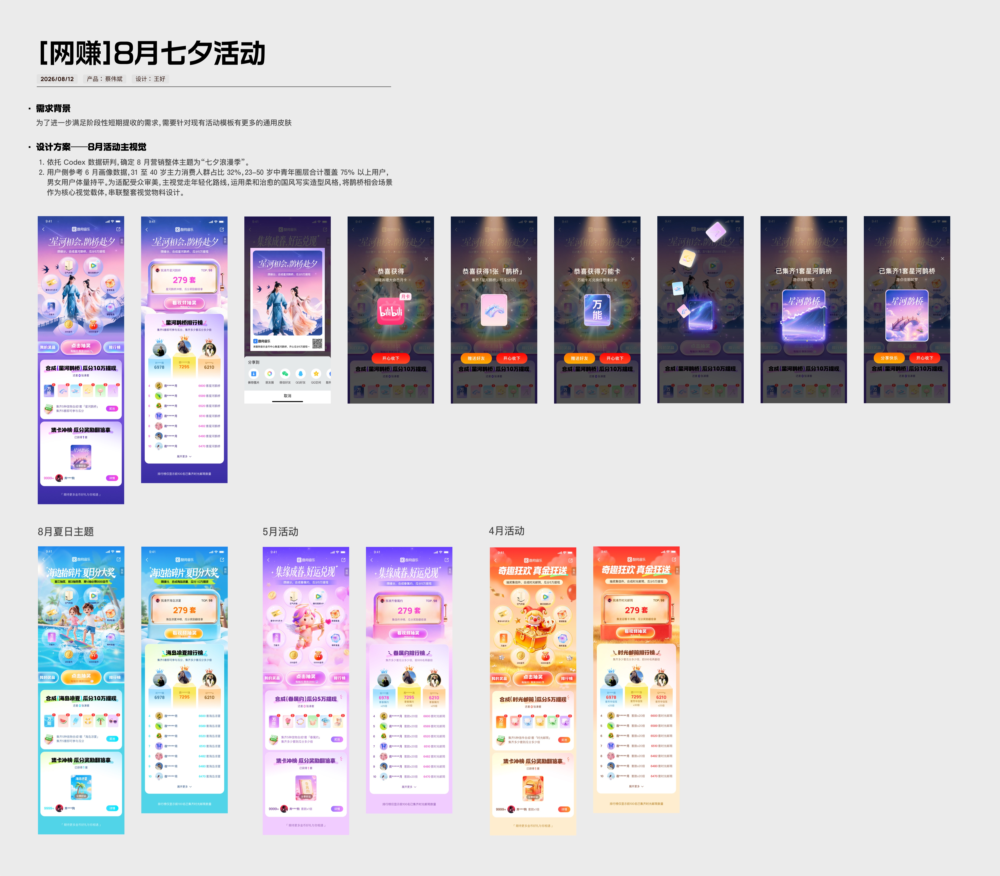
从阶段性提收需求出发，为既有活动模板设计可复用的七夕主题皮肤。方案以粉紫渐变、星河流光和鹊桥意象建立浪漫氛围，以古风人物和奖励卡片形成核心视觉锚点，并统一首页、排行榜、分享页、弹窗及奖励状态；最终按开发目录完成背景、标题、按钮、卡片、图标、弹窗和色值标注输出，让设计从视觉展示顺利进入工程落地。
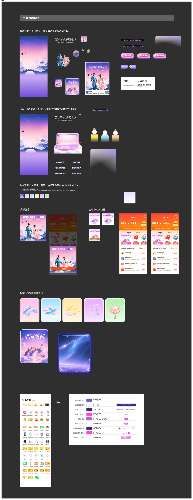
熟悉流程与工具，完成高等级用户开屏权益的风格探索和多尺寸适配。
完成陪伴 IP 参赛方案整合，并启动七夕集卡角色与节日视觉研究。
推进五套人物原画、人物大卡、卡背和活动 UI 的阶段性输出。
根据协作反馈收敛人物方向，延展星空河灯、气泡与勋章组件。
完成七夕 IP 体系定稿，以及螺旋桨箱四状态和落地效果设计。
完成七夕大礼物的叙事分镜、画面风格设计与动画视频落地。
完成七夕活动主题换肤、核心页面与弹窗设计，并整理全量切片与开发标注。
本周在上周风格探索的基础上，进一步从“确定方向”推进到“形成可落地的系列资产”。在人物原画与卡牌设计中，开始更重视角色之间的差异化、卡面统一性和活动玩法识别；在 UI 换肤部分，也逐步理解节日活动视觉不能只停留在装饰层面，还需要兼顾页面信息层级、按钮可读性、直播间场景适配和用户操作路径。
人物与卡牌部分已经形成较完整的系列效果，但仍需要继续检查细节统一性，例如卡面边框、角色比例、文字位置和卡背识别是否足够稳定。UI 换肤仍处于优化阶段，后续需要继续调整页面背景、活动组件、弹窗层级和直播间露出位置，避免节日氛围过强导致核心信息被削弱。
WEEK 4 的重点是将七夕集卡项目从前期风格探索推进到具体资产产出。本周完成了人物原画、人物大卡和卡背的阶段性设计，并同步推进活动 UI 换肤，为后续完整活动页面落地和细节优化提供了较明确的视觉基础。
接下来会继续围绕 UI 换肤进行优化，重点检查活动页面与直播间场景中的信息可读性、按钮状态、装饰元素比例和整体氛围统一性。同时也会继续整理卡牌资产与页面之间的关系，让角色形象、卡面系统和活动界面形成更完整的七夕主题体验。
该项目延续上周“七夕集卡风格探索”的方向，将前期确定的新中式 3D 写实古风风格进一步落到具体角色和卡牌资产中。本周完成 5 张人物原画、5 张人物大卡和 1 张卡背，围绕“玉佩、针线、喜鹊、同心结、河灯”等七夕元素建立角色区分，并通过不同卡面色彩强化系列感。
设计中重点关注人物姿态、服饰材质、卡面轮廓和卡背识别的统一关系，让单张卡牌具有独立记忆点，同时放在整套集卡系统中也能保持一致的节日氛围和视觉秩序。
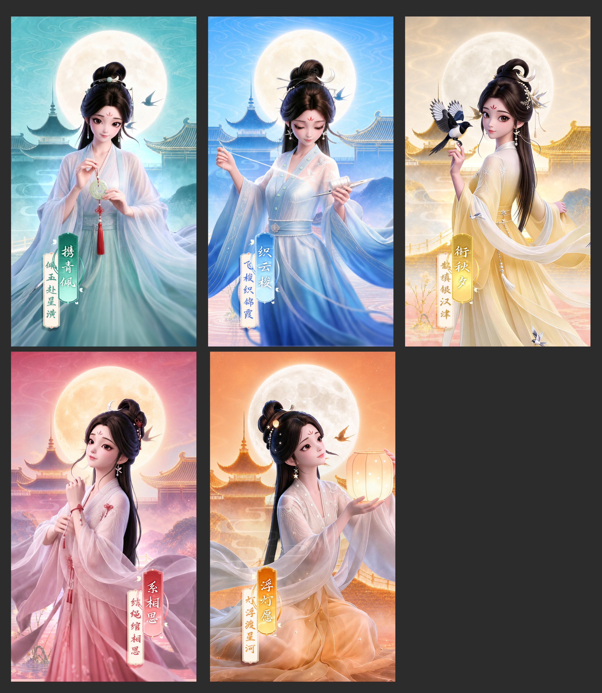
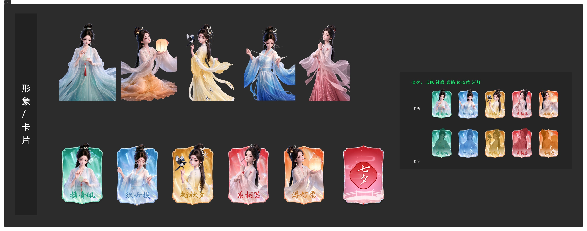
UI 换肤围绕七夕集卡活动的页面氛围展开，尝试将卡牌元素、红粉色节日氛围、活动按钮、弹窗样式和直播间入口进行统一包装，使活动主视觉能够延展到不同使用场景中。
目前方案仍在优化中，后续会继续调整背景层次、组件边界、按钮质感和页面信息层级，让整体视觉在保持节日感的同时，保证用户能够快速理解活动规则、排名信息和操作入口。
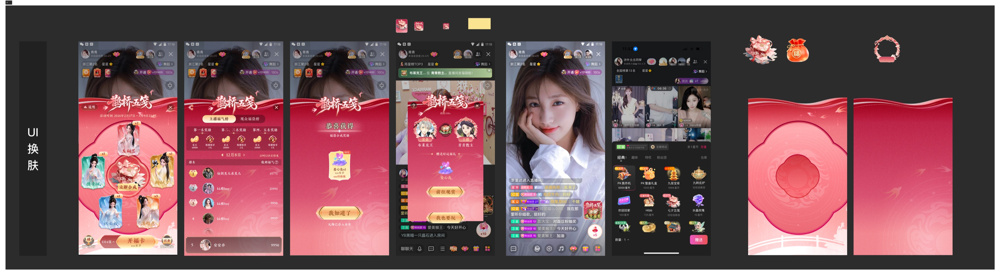
本周从单纯完成视觉输出，进一步转向根据命题组织方案表达。在《音啾》作品中，开始关注角色设定、组件功能、使用场景和参赛展示之间的叙事关系；在七夕集卡探索中，也尝试把过往玩法经验转化为视觉方法，思考角色、道具、卡面和节日符号如何共同服务项目主题。
后续需要继续提升方案说明的精炼度，减少重复表达，让每一张展示图都能更清楚地承担信息传达功能。进行中项目还需要进一步验证角色风格与业务场景的适配度，并在卡面系列化、材质细节和玩法识别上做更完整的推敲。
WEEK 3 以赛事作品收口和新项目探索为主。一方面完成《音啾》参赛方案的视觉整合，另一方面推进七夕集卡方向的初步定位，为后续继续细化角色形象、卡牌系统和活动视觉规范打下基础。
接下来会继续围绕七夕集卡项目深化角色与卡面设计，补充更完整的视觉系列关系，并在后续页面中同步整理项目过程、阶段结果和最终输出，让周报内容既能记录工作进展，也能呈现设计思考。
该作品围绕“陪伴型听歌搭子”展开，将音乐精灵设定为可以停留在手机桌面的小组件伙伴。角色以粉色系、耳机、指挥棒、小云雀伙伴等元素建立亲和、轻盈和音乐感，通过锁屏、时钟组件、倒计时、照片组件和天气组件等场景，呈现它在日常听歌中的陪伴价值。
展示上重点强化作品与比赛命题的连接：它不只是单一角色形象，而是可以被放进桌面组件体系中的情绪陪伴 IP。用户在点亮屏幕、查看日程或听歌时，都能通过角色状态和组件内容获得轻松、可爱的反馈。

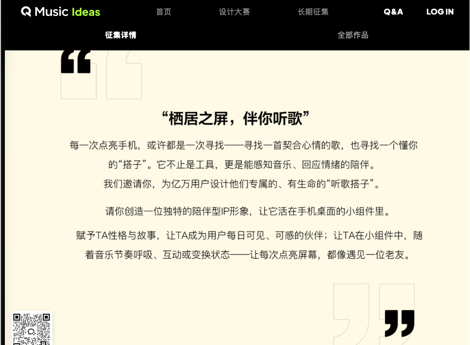
该方向基于以往集卡玩法进行延展，将七夕主题与“织女”角色设定结合，尝试建立更完整的国风卡面视觉体系。当前阶段重点探索角色风格、服饰材质、古典道具和卡牌系列化表达，方向定位为新中式 3D 写实古风 CG 风。
视觉思路上，角色以柔和浅色衣裙、轻透纱质、刺绣纹样和玉佩等细节建立东方审美；卡牌元素则结合玉佩、针线、喜鹊、同心结、河灯等七夕符号，为后续玩法包装、卡面分级和活动页面延展提供可继续深化的基础。
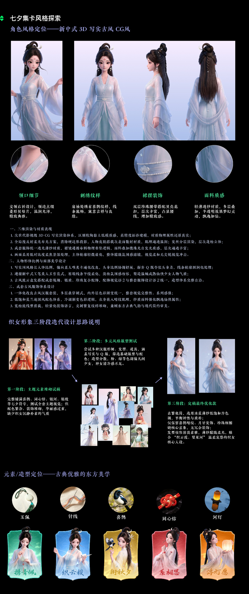
通过前两周的学习和项目练习，逐步从“熟悉工具”过渡到“理解项目需求并进行系统化输出”。在设计过程中，对直播场景中的等级权益表达有了更清晰的认识，也开始关注不同尺寸下的视觉重心、信息层级和素材留白，提升了从单张视觉方案延展到完整适配体系的能力。
本阶段在多尺寸延展和风格区分上仍有继续优化空间。后续可在正式输出前更充分地梳理不同等级之间的视觉梯度、材质差异和适配规则；在尺寸适配阶段，也需要进一步加强对文字安全区、主体位置和按钮区域的细节检查，减少因比例变化带来的局部偏移和信息压缩问题。
WEEK 1-2 以学习适应和项目实践为主，一方面完成了新软件与基础流程的熟悉，另一方面通过秀场 UI 项目进行实际设计训练。整体产出覆盖风格探索、等级视觉延展和多尺寸页面适配，为后续更高效地承接正式设计任务打下了基础。
接下来会继续提升对业务场景和设计规范的理解，在承接具体需求时更早介入需求分析与视觉方向判断，形成从风格探索、方案细化到多尺寸落地的完整工作方法。同时，也会持续积累直播、秀场、等级权益等社娱场景的视觉表达经验，提高方案输出的准确性、完整度和落地效率。
该项目围绕秀场高等级用户的开屏权益展示展开，目标是在延续现有 M4-M5 视觉识别的基础上，补充 M5 与 M6 的开屏特权设计。前期先分析原有页面的构图、人物主体、等级标识和直播氛围，再结合新等级的差异化需求进行风格探索。
设计思路上，M5 侧重延续粉紫调金属拉丝风格，通过柔和光效、弧形包裹和梦幻色彩强化亲和力与精致感；M6 则进一步提升稀缺感和尊贵感，分别尝试黑金调金属镶钻风格与亮色钻石质感风格，通过金属材质、钻石元素、光束和暗亮对比拉开等级层次。
初版阶段主要集中在三种风格方向的探索，先验证人物主体、背景材质、等级标签和底部信息区的关系。后续在最终版中进一步补充 M5、M6 权益页关系、设计元素拆解和完整尺寸展示，让方案从单张视觉效果推进到更完整的项目表达。最终完成三个页面方向，并将每个方向延展为六个常用尺寸，保证在不同屏幕比例下仍能保持主体突出、信息清晰和品牌露出完整。
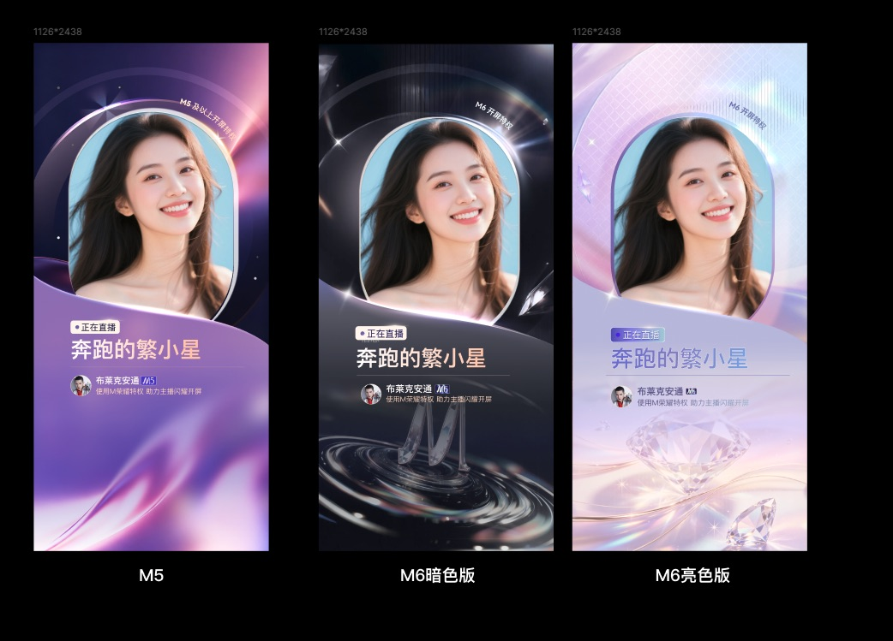
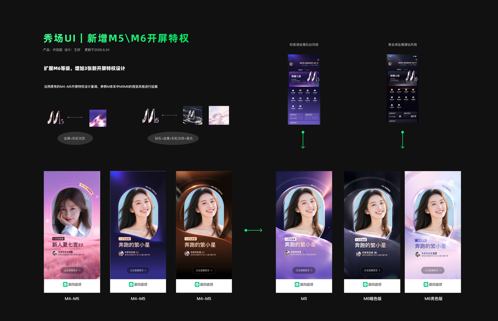

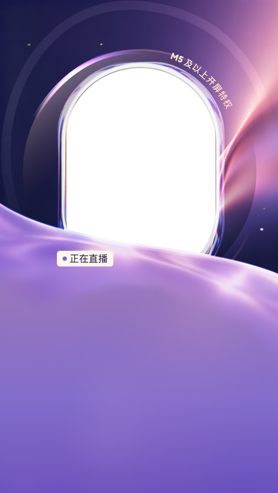
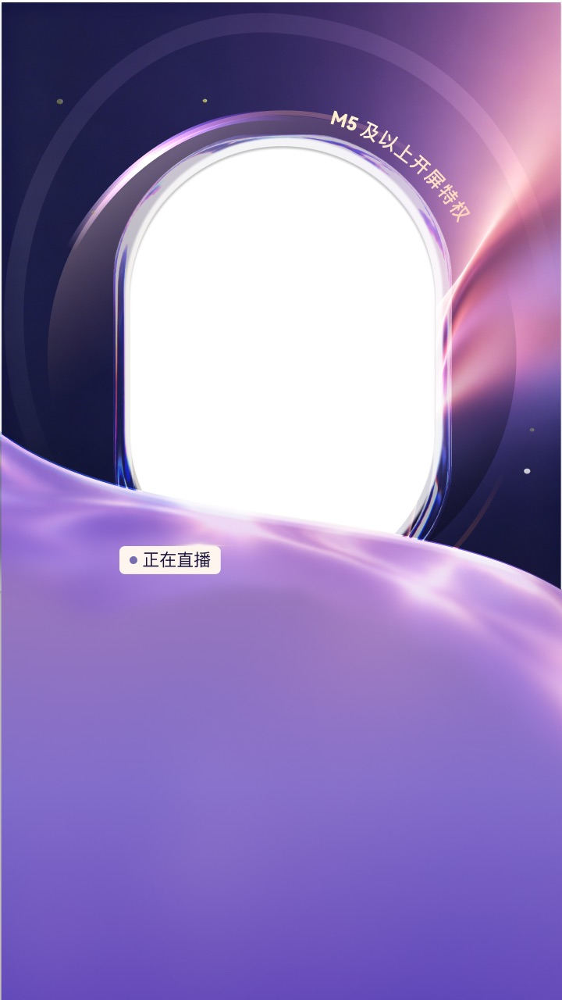
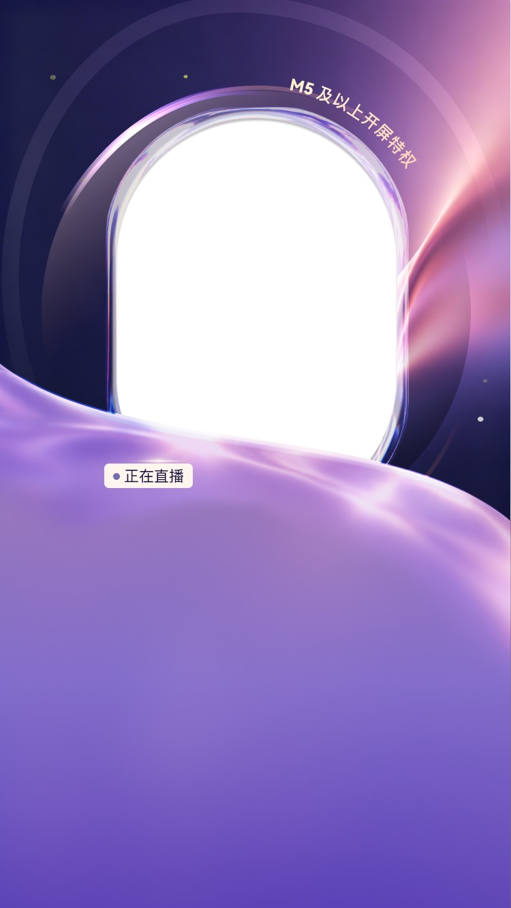

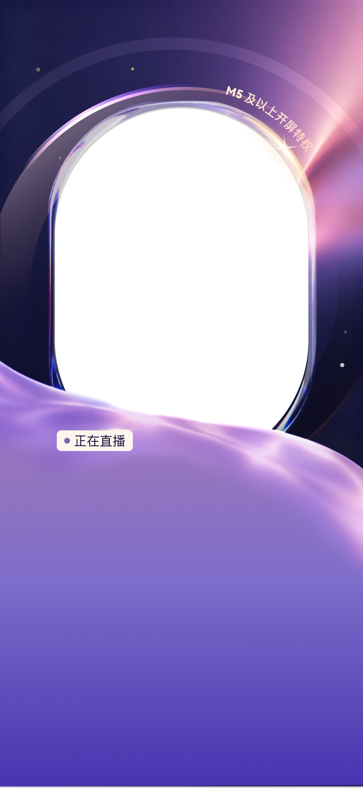

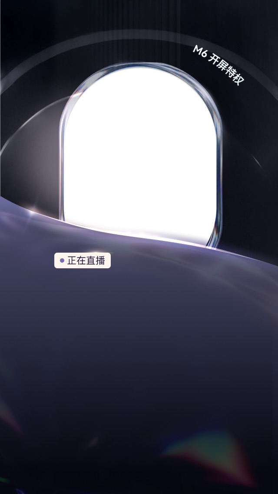
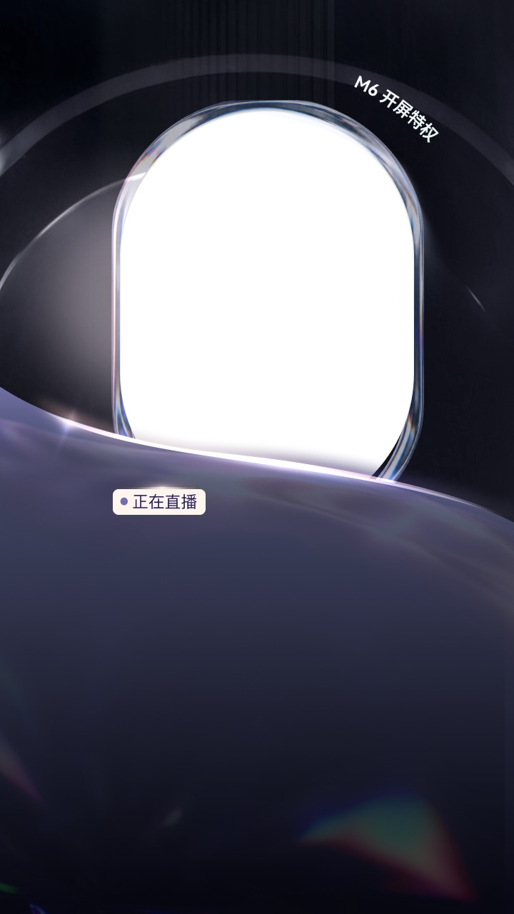

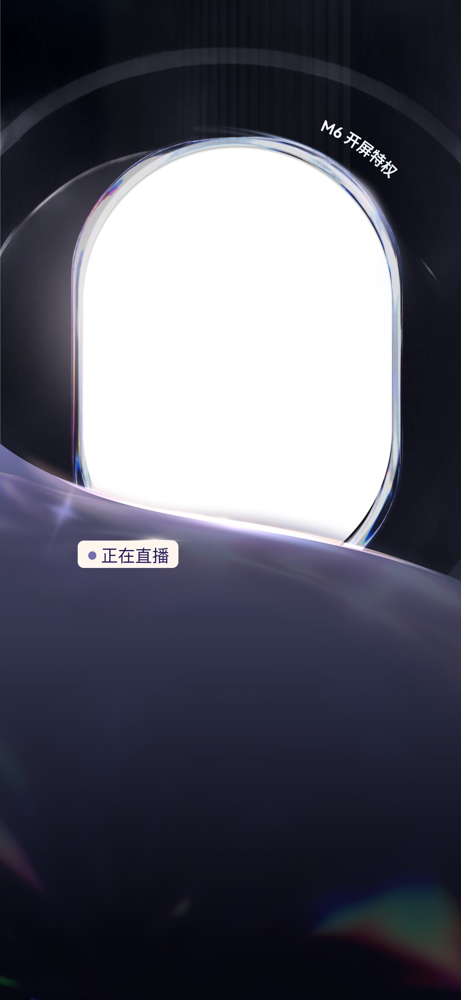

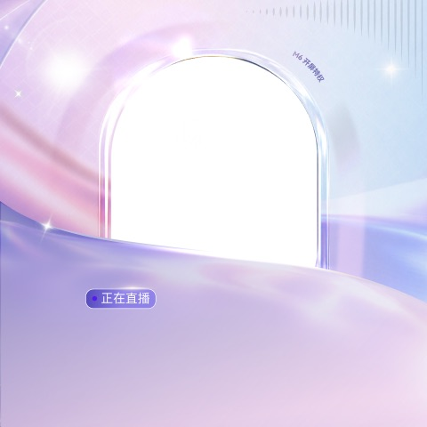

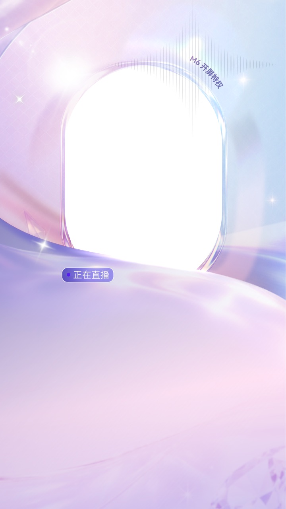

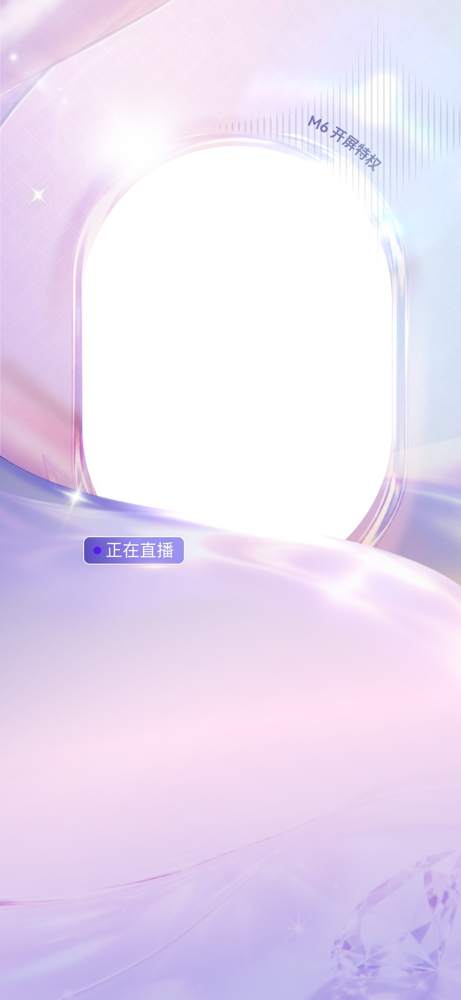
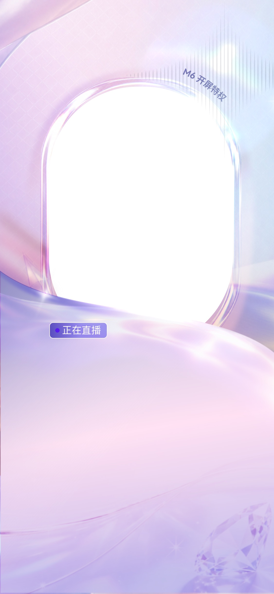
本阶段让我更直观地理解到，活动视觉并不是一次性完成的“出图”，而是需要在跨部门协作、用户偏好、玩法诉求与落地约束之间不断校准。通过多轮角色迭代，我开始以“是否易被用户感知和记住”作为判断标准；在 UI 换肤中，也进一步学习从单一页面思考扩展到主流程、直播间和互动组件的全链路一致性。
后续仍需持续关注不同终端与复杂内容场景下的可读性，例如深色星空背景中的文字对比、活动按钮的视觉优先级，以及长列表和直播间信息叠加时的层级稳定性。同时，可在设计前期更早梳理组件状态与技术限制，为后续开发衔接预留更充分的规范说明。
WEEK 5–6 的核心是将七夕项目从“完成主要资产”推进到“根据反馈收敛方案并补足体验细节”。角色和卡牌经过多轮协作迭代后更贴合用户偏好；UI 则由基础换肤深化为星空河灯主题，并通过气泡、勋章等组件延展形成更完整的七夕活动体验。
下一阶段将继续跟进页面细节与实际落地效果，重点验证核心活动入口、集卡流程及直播间场景的信息可读性；同时完善组件规范和状态细节，让设计资产能够更高效地支持开发实现与后续运营配置。
结合其他部门的意见和对用户偏好的判断，对人物原画、角色姿态、服饰配色及卡牌框型进行了多轮沟通与调整。设计不再只关注单张卡牌的完成度，而是从整套角色的差异化、收集过程中的视觉节奏，以及卡牌在活动页面中的识别效率进行整体优化。
最终方案以不同的角色动作、道具与色彩建立记忆点，并通过统一的卡牌轮廓和七夕符号维持系列感，使人物资产既能独立呈现，也能更好地服务集卡玩法和用户的收集期待。
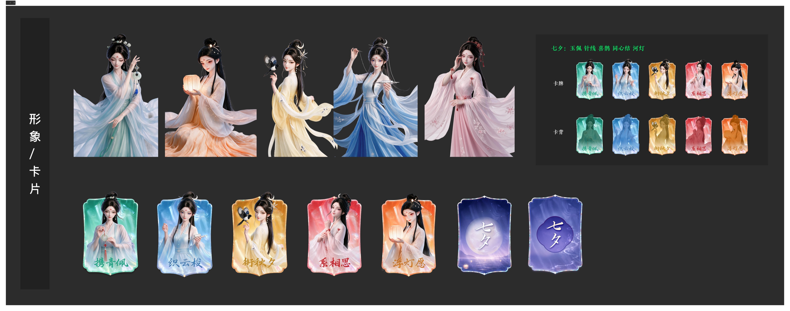
在原有活动框架上，重新梳理七夕主题的氛围表达，以深邃星空、月色渐变与河灯微光作为核心视觉元素，将活动首页、排行榜、任务弹窗、直播间入口等主要页面进行统一换肤。通过冷紫蓝为主、暖金橙为点缀的色彩关系，既保留夜色中的浪漫感，也为按钮、奖励与进度信息建立清晰的视觉焦点。
设计过程中同步关注玩法路径与页面层级：集卡、榜单、奖励等高频信息维持稳定阅读顺序，氛围元素则承担引导和烘托作用，避免装饰感过强而影响用户操作。
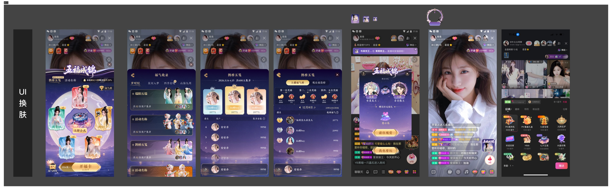
为保证主题体验在更多使用场景中保持连续，进一步围绕聊天互动与激励机制延展气泡、昵称标识及勋章组件。气泡组件结合直播间深浅背景与信息密度调整边框、底色和文字对比；勋章则以喜鹊、星点与暖色金属质感呼应主 UI 的夜空叙事，形成可辨识的荣誉层级。
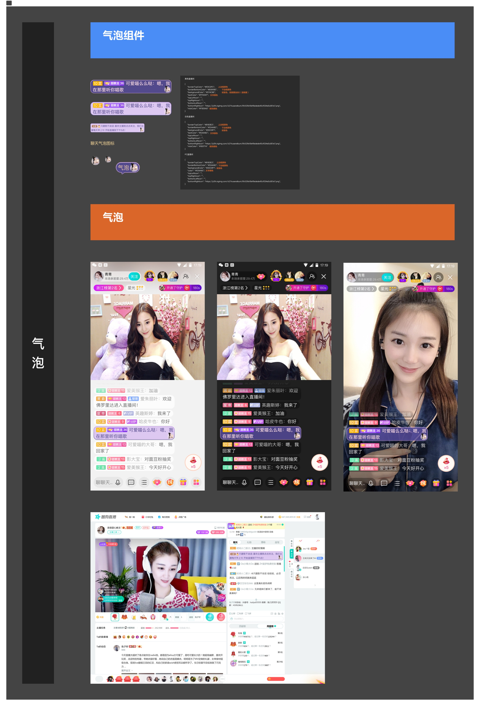
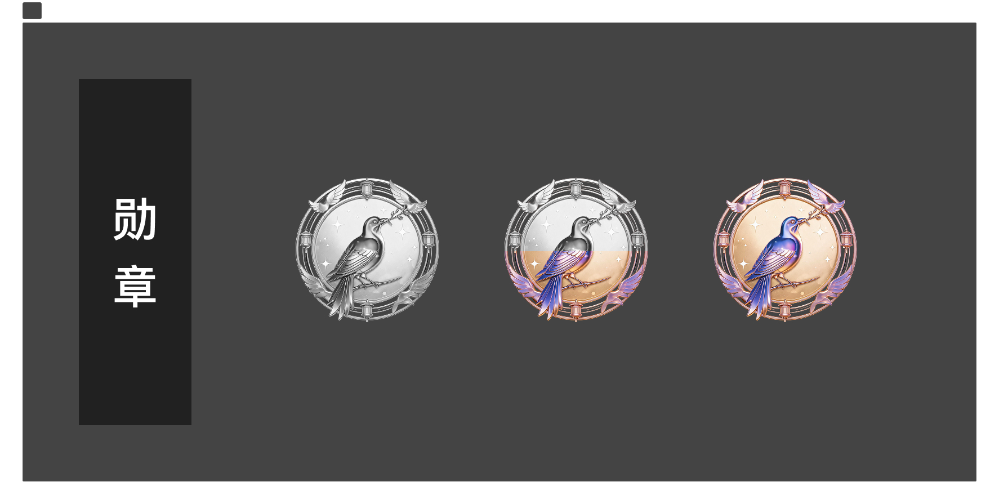
本周的两个项目分别强化了我对“角色资产系统化”和“玩法反馈可视化”的理解。七夕 IP 的收口不只是完成五张图，而是要让人物、卡面、卡背在同一套规则中彼此呼应；螺旋桨箱的设计则让我更关注状态变化是否能在短时间内被用户看懂。通过探索、比较和逐轮优化，我开始从最终使用场景来判断设计是否有效。
后续在角色项目中，可更早建立动作、构图与卡牌裁切的检查清单，减少后期因展示比例差异带来的细节调整；在玩法道具设计中，也需要在更小尺寸及高信息密度棋盘内持续验证色彩对比和状态辨识，确保视觉变化既有反馈感，也不会抢占核心消除内容的注意力。
WEEK 7 的重点是两类资产的最终落地：一类是以人物、动作和卡牌体系为核心的七夕 IP 皮肤；另一类是服务消消乐玩法节奏的螺旋桨箱。前者完成了从形象探索到系列定稿的收束，后者建立了由状态递进驱动的清晰视觉反馈，为后续接入项目提供了可使用的设计方案。
下一阶段将继续跟进素材落地后的展示效果，检查角色卡牌在实际界面中的裁切、文字与背景适配；同时结合玩法测试观察螺旋桨箱四种状态的识别效率，必要时完善状态规范、动效方向与相关资源说明，使设计能更顺畅地进入开发和配置环节。
本周完成七夕 IP 五套皮肤的最终效果。以角色自身气质为基础，为不同人物配置具有区分度的色彩、服饰细节与代表性道具，并将人物与卡牌框型共同收敛，使五套皮肤在视觉上各具记忆点，同时维持统一的新中式七夕氛围。
在呈现层面，重点检查角色与卡面的匹配关系：人物主体在卡牌裁切内保持清晰，配色能够快速帮助用户区分角色，系列资产则通过统一轮廓、光感和装饰语言建立整体感。
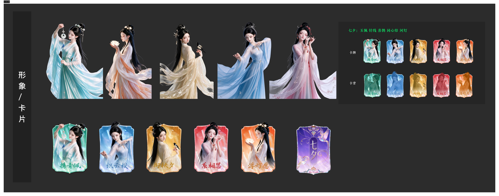
在原有七夕主题基础上，对首页核心视觉进行了进一步收敛：将具象的河水背景调整为更抽象的银河流光，以更轻盈的空间层次承接人物卡牌与活动信息；同时重构中心圆盘的轮廓与结构，移除月亮意象，为中秋活动预留专属的节日元素和后续视觉表达空间。
调整后，首页以银河、星点与暖色光晕建立七夕氛围，既保留浪漫的夜空叙事，也减少了主题元素之间的竞争，让视觉焦点更集中于集卡玩法和角色资产。
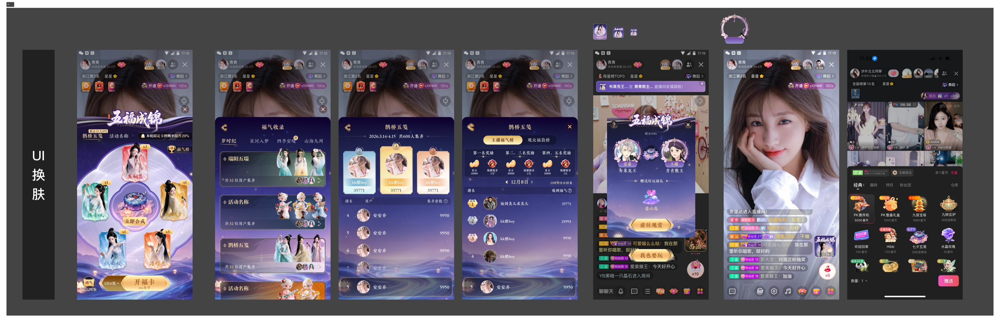
围绕角色的情绪表达和道具特征开展动作探索，对姿态、手部动作、衣摆走势与视线方向进行比较，选择更适合卡牌展示、也更能传递角色性格的方案。卡背设计则从月色、水面、鹊鸟和中式纹样等元素逐步收敛，最终以更简洁而具辨识度的紫金构图统一整套卡牌背面。
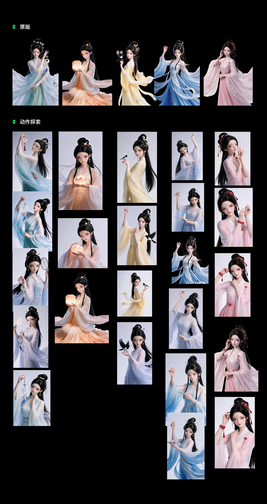
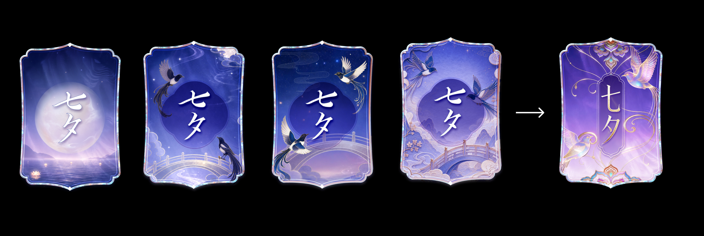
为消消乐玩法设计螺旋桨箱道具，并围绕玩法进程建立四种清晰状态：初始状态、点亮 1、点亮 2、点亮 3。每次状态变化均通过一片叶片的暖色点亮来传达进度，用户无需阅读额外说明，也能直观感知道具距离触发效果的阶段。
最终方案采用紫色箱体搭配金色叶片，既与棋盘内的高饱和元素形成区分，也通过圆润、立体的造型保持轻松的休闲游戏感。落入棋盘后的展示同步验证了道具尺寸、轮廓和亮色反馈，保证其在复杂消除场景中仍能被快速识别。
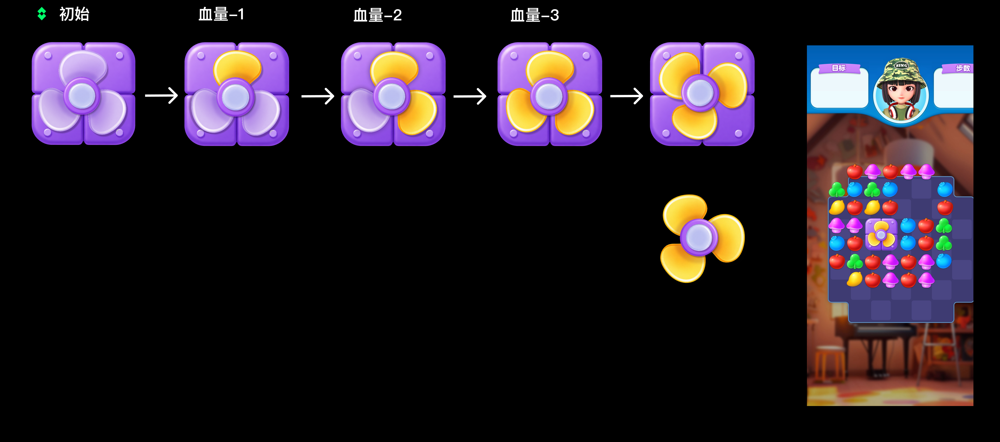
前期围绕箱体结构、叶片形态、色彩组合及立体材质进行了多方向探索；在初版基础上，进一步降低外框的复杂度，强化叶片的状态对比，并优化整体色彩，使最终方案的视觉重心更集中、玩法反馈更直接。
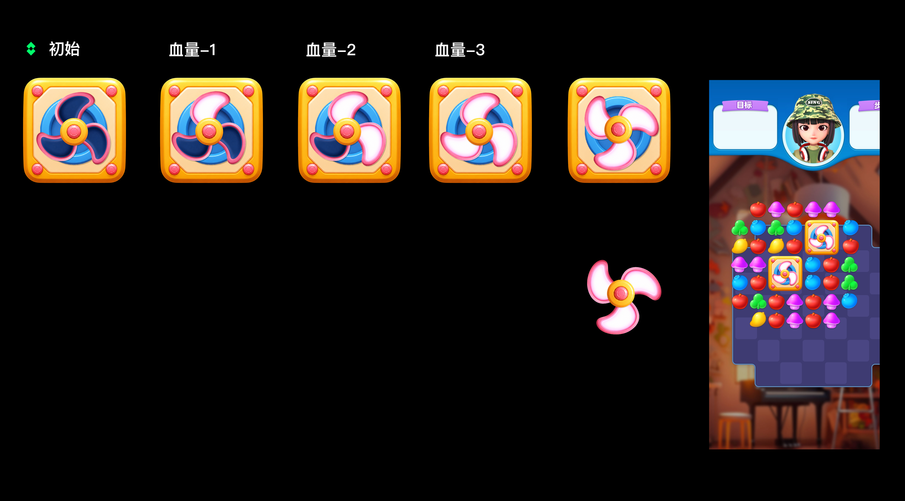
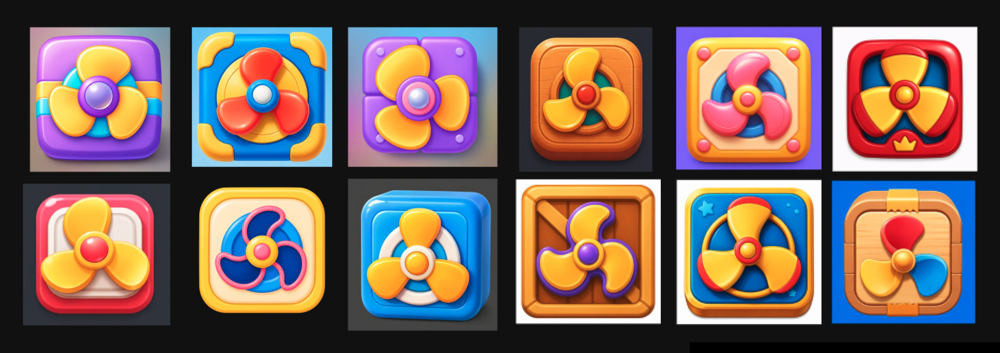
本周从单张视觉设计进一步走向时间维度的叙事设计。制作过程中，我不仅需要判断每一帧是否好看，还要考虑前后镜头的信息承接、人物视线与动作方向、景别变化以及情绪如何逐步累积。通过从故事节拍到分镜，再到动画落地的完整推进，我对“镜头为什么存在、画面如何服务情绪”有了更具体的理解，也提升了在同一美术风格下保持角色与场景连续性的能力。
后续可继续加强连续镜头中人物面部、手部和服饰细节的一致性，并更精细地校准镜头时长、运动速度与转场节点，避免唯美元素过多时影响叙事焦点。同时还需针对直播间小屏观看和网络加载环境测试亮度、字幕安全区、视频码率与文件体积，在保留云雾和粒子质感的前提下提高播放稳定性。
WEEK 8 完成了七夕「大礼物」从静态概念到动态成片的关键闭环：先用分镜明确人物关系和情绪路径，再以统一的东方幻想视觉语言塑造浪漫氛围，最后通过镜头、布料、云雾、飞鸟与光效的运动将情绪推向相逢高潮。项目让我把角色设计、场景设计、视觉风格与动态叙事整合到同一条制作链路中。
下一阶段将结合实际播放反馈继续优化镜头节奏、转场流畅度和终幕停留时间，并补充音效、音乐节拍与关键动作的同步设计；同时整理角色、场景、光效与视频输出规范，为后续同类型大礼物的快速延展和多端适配沉淀可复用的方法。
故事以七夕相会为情绪核心，采用织女与牛郎双线靠近的结构展开。开场由织女置身云海建立仙境与角色身份，随后以灵鹊飞行连接两人的空间；牛郎抬手追随、二人在云海之间靠近，最终于满月与鹊桥下完成相逢。五个关键镜头由静到动、由远到近，再回到具有仪式感的大全景终幕，使大礼物在有限时长内仍具备完整的铺垫、推进、高潮与收束。
整体采用顶级 CG 动画电影质感与东方幻想仙侠美学。色彩以柔和的粉蓝、月白和星夜蓝为主，并用织女服饰的暖橙光与牛郎的冷蓝形成角色区分。云海和体积雾建立纵深，满月与逆光形成视觉锚点，梦幻星光粒子、花瓣和鹊鸟轨迹补充运动方向；半透明丝绸与发丝在光线下呈现轻盈质感，让画面保持唯美、空灵与高级感，同时避免装饰元素遮挡人物情绪。
动画阶段根据分镜情绪安排镜头推进、跟随、升降与缓慢环绕，并让衣摆、长发、鹊鸟、云层和星光形成不同速度的运动层次。相逢镜头通过人物靠近、暖光增强和粒子聚拢逐步建立高潮；结尾则降低运动幅度，让满月、鹊桥与人物剪影形成稳定停留，兼顾情绪余韵与礼物信息的识别。
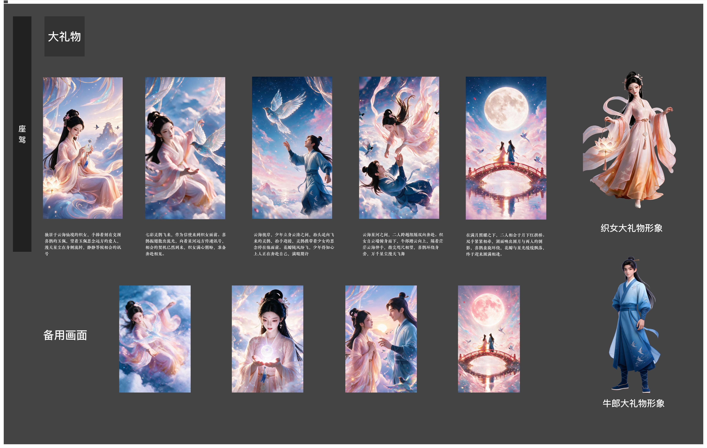
本周的重点从单纯完成一套活动视觉，进一步转向“在既有产品框架中高效换肤并保障落地”。设计过程中需要同时理解运营目标、用户偏好、历史模板和开发成本，在有限结构内建立新的节日气质。通过对首页、榜单、弹窗和奖励状态的统一梳理，我对活动视觉系统的层级关系、组件复用和多状态一致性有了更完整的认识；切片阶段也让我更加关注命名、尺寸、透明边界和开发使用场景，使交付不只停留在效果图层面。
后续需要完成几个余下的 Banner 延伸，并制作 1 个 GIF 动效。
WEEK 9 完成了网赚七夕活动从需求理解、主题定位、页面换肤到开发切片的完整闭环。最终方案在成熟活动模板之上建立了统一的星河七夕视觉语言，并将首页、榜单、分享与奖励反馈串联成连续体验；通过规范化切片和标注，也让设计成果具备直接进入开发阶段的可执行性。
下一阶段将结合开发还原和线上效果继续检查图片压缩、组件定位与多机型适配，并根据运营数据观察主视觉、奖励入口和排行榜模块的用户反馈。同时整理本次七夕换肤中的可复用背景、按钮、弹窗和卡片规范，为后续中秋、国庆等节点活动沉淀更高效的主题换肤与交付流程。
项目目标是满足阶段性提收需求，为现有活动模板补充更具通用性的节日皮肤。设计并未重新搭建玩法框架，而是先梳理成熟模板中可复用的首页、榜单、抽奖、集卡和奖励反馈结构，再围绕七夕主题更新视觉资产。这样的处理既保持用户对活动路径的熟悉度，也将主要设计精力集中在节日氛围、奖励吸引力和核心信息识别上。
视觉主题以“星河相会·鹊桥赴夕”为核心，使用粉紫、星夜蓝与柔和暖光构建浪漫而轻盈的七夕氛围。首页通过古风人物、星河鹊桥和漂浮奖励卡片建立第一视觉层级；榜单、分享页与弹窗延续相同的渐变、流光边框和圆角组件语言，并通过明亮的粉色按钮与高对比奖励数字维持操作效率。与历史月份的蓝色夏日、粉色幻想和橙色欢庆皮肤相比，本次方案在同一模板结构下形成了清晰独立的节点辨识。
围绕完整活动流程补齐分享海报、月卡与万能卡获得、集齐卡片、星河鹊桥合成及奖励入口等状态，确保用户从进入活动、参与任务到领取奖励的反馈连续一致。设计中重点控制背景氛围与弹窗信息之间的明暗关系，让人物和星河装饰承担情绪表达，标题、奖励数量与主按钮承担信息和行动引导。
视觉确认后，将页面按开发目录拆解为活动首页、瓜分排行榜、合成卡片、底部弹窗、金币中心入口等模块，分别输出背景、主标题、人物、按钮、卡片、装饰和图标素材。对于合成动画与奖励反馈，进一步整理不同状态的鹊桥卡片和星河边框；同时汇总奖品图标、正文与按钮色值、描边和渐变关系，帮助开发快速理解资源用途并减少还原偏差。
切片过程中同步检查透明边缘、素材留白、图片边界与缩放清晰度，使相同元素能够在不同页面复用。最终交付不仅包含可直接调用的图片资源，也包含页面归属、状态说明和视觉规范，让整套活动从效果图顺利转换为结构清晰、便于维护的工程资产。